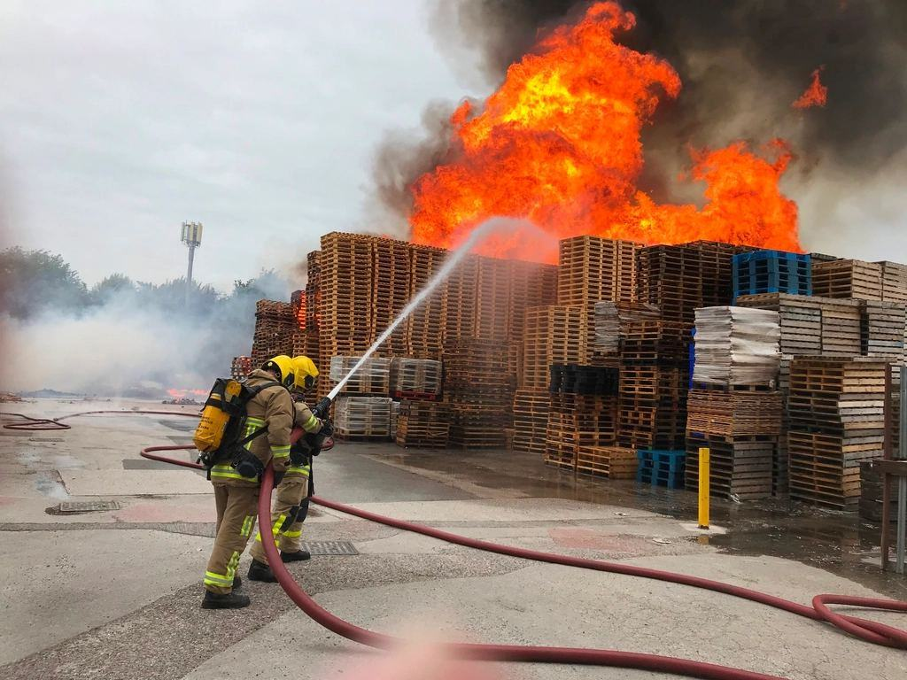
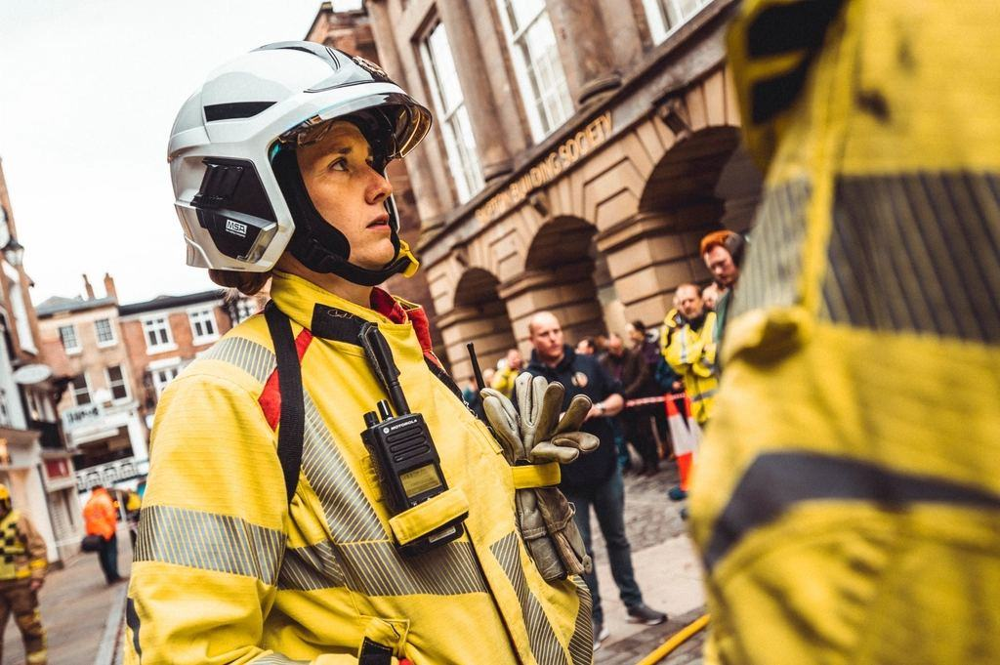

Tjänster
Vi är tolv personer i en före detta båtverkstad vid Alnöbron. Våra kunder är fastighetsbolag, bostadsrättsföreningar, industrier och sotningsentreprenörer i Medelpad och Ångermanland som vill veta skicket på sina skorstenar innan de lägger pengar på ställningar och renovering.
Vilken skorsten behöver ni se?

Inspektion från luften
En drönare flyger runt murstocken på fyra meters avstånd och tar 120–200 bilder i hög upplösning. Vi ser frostsprängt tegel, lösa plåtbeslag och sprickor i krönet som inte syns från gatan.
En vanlig flerbostadsfastighet med sex murstockar tar 40 minuter att flyga.

Termografi och kamerasond
Med värmekamera under pågående eldning ser vi var rökgaserna tränger ut genom murverket. Kamerasonden visar insidan av kanalen, varv för varv.
Kombinationen ger ett underlag som går att jämföra år för år.

Register och underhållsplan
Varje skorsten får ett eget kort i vår webbtjänst med bilder, mått, byggår och tidigare åtgärder. Förvaltaren ser direkt vilka murstockar som behöver åtgärdas inom ett, tre eller fem år.
Registret kan exporteras till de vanligaste underhållssystemen för fastigheter.

Industri och energi
Höga skorstenar på sågverk, värmeverk och processindustri inspekteras utan att anläggningen stängs. Vi flyger inom den säkerhetszon som driftledningen godkänner.
Rapporten följer kundens egna mallar för underhåll och myndighetskontroll.
Från adresslista till underhållsplan
- 1

Adresslista
Ni skickar fastigheter och eventuella ritningar. Vi kontrollerar luftrum och grannar och bokar en flygdag.
- 2

Flygdag
Två piloter och en tekniker på plats. Hyresgästerna aviseras en vecka i förväg med lapp i trapphuset.
- 3

Analys
Teknikern går igenom bilderna, markerar skador och klassar varje murstock i tre nivåer.
- 4

Rapport och register
Inom fem arbetsdagar får ni rapporten och tillgång till registret, med fasta priser för åtgärderna från samarbetande murare.
Tillstånd och yrkesbevis
- Tillstånd i specifik kategoriDrönartillstånd från Transportstyrelsen för flygning nära byggnader och människor.
- Certifierad termografTvå medarbetare med termografcertifikat nivå 2 för byggnader och installationer.
- Tre tekniker med yrkesexamenTre tekniker med yrkesexamen som bedömer varje skorsten.
- Ansvarsförsäkring 10 MkrTäcker både drönarverksamhet och tekniska bedömningar.